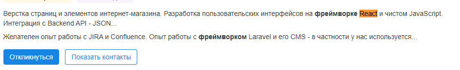
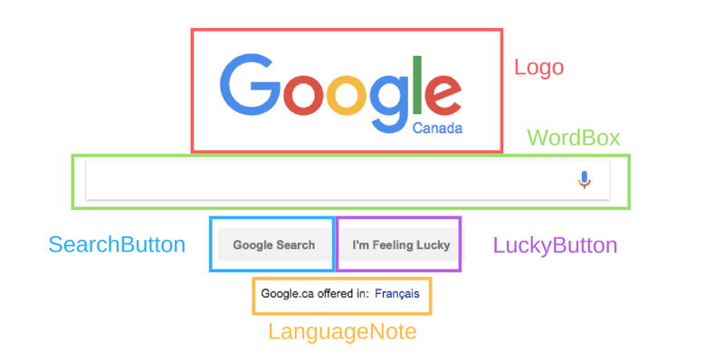
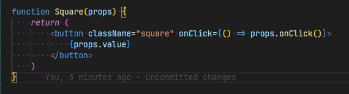

by LilithPrimary
by LilithPrimary
Library or Framework?
 spoiler: libraryBoth:
Code written by someone else that helps you perform some common tasks in a less verbose way.
differences:
A framework inverts the control of the program. It tells the developer what they need. A library doesn’t. The programmer calls the library where and when they need it.
React
(also known as React.js or ReactJS) is a free and open-source front-end JavaScript library.
Maintained by Meta (formerly Facebook).
A way to build user interfaces.
Cutting each page into pieces - components
Each component is a JavaScript function that returns a piece of code that represents a piece of a web page
JSX
Neither a string nor HTML
Syntactic sugar for the React.createElement(component, props, ...children) function
React
brouser
React DOMIOS
React nativeAndroid
React nativeDocument Object Model
Representation the UI of application- Tree data structure - changes and updates - fast
- UI - re-rendering or re-painting - slow
Browser DOM
The VIRTUAL DOM
The Virtual DOM (VDOM) is a programming concept where an ideal, or “virtual”, representation of a UI is kept in memory and synced with the “real” DOM by a library such as ReactDOM. This process is called reconciliation.